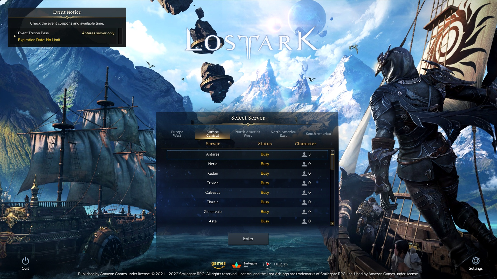
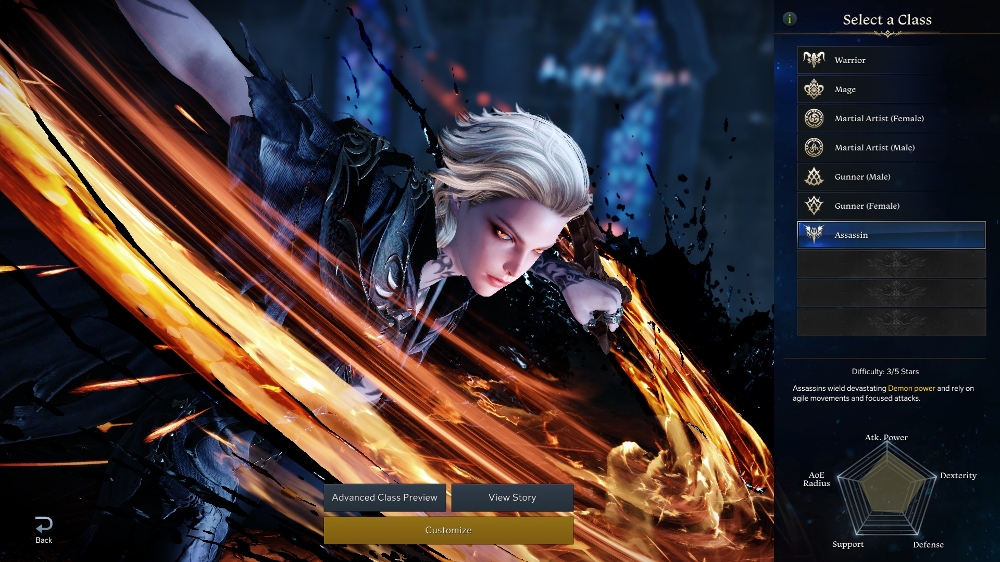
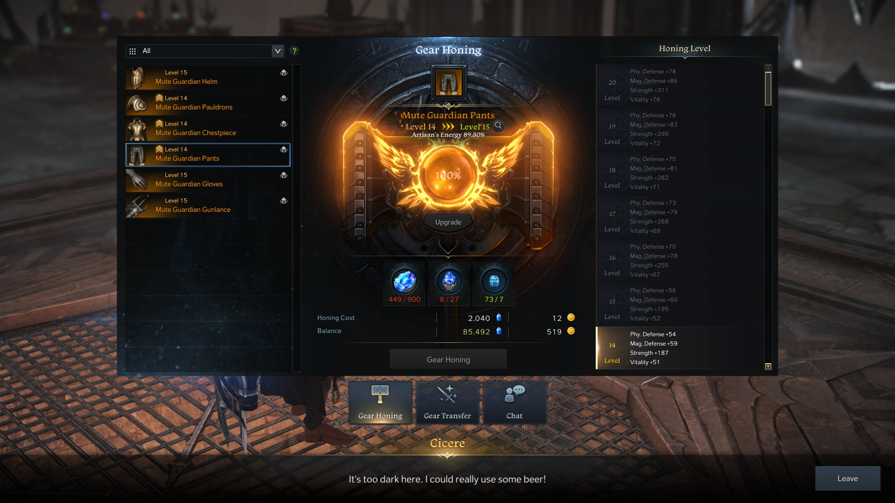

Начало
НачалоLost Ark
Наистина ли е толкова добра?
Lost Ark – Free-to-play action combat asymmetrical MMORPG - излязла декември
2019 само в
южнокорейския регион, а по-късно и официално release-ната със сървъри в Европа, Северна и Южна Америка.

Разбрах за играта 2-3 седмици преди да излезе в нашия регион и с нетърпение я чаках, гледайки stream-ове и
клипове, в които постоянно се говореше „колко е добра“, как е „революция в жанра“, играта, която има content
за всеки вид играч – бил той PVP фанатик, Dungeon/Raid hardcore любител, game-content колекционер и прочие,
това бяха основните популярни мнения от играчите, които до сега са могли да играят играта.
Но освен мен, гейминг маркета, по-точно може би MMORPG маркета тежко се нуждаеше от глътка вода, от това колко
беше пресъхнал. Hype-ът около този жанр отдавна вече не е същият. С повечето MMO-та работата не вървеше никък
на добре, от предвид колко е трудно всъщност да се поддържа една такава игра, финансово, game-wise и
поддържането и в market-а, като повечето очи са нахвърлени върху другите големи риби в океана.
Поради празния market, die-hard MMO играчите насочват вниманието си към новите release-ове. Final Fantasy XIV
дори след лошия си старт, последните 2 години набра огромна популярност. Дългоочакваната Elden Ring, въпреки
не толкова спадаща откъм MMO-тата, ден след release стигна топ 3 в Steam за брой играчи. Въпреки спадналия
playerbase на New World днес, в деня на нейното пускане достигна 900 хиляди играча.
А Lost Ark? 1,3 милиона от launch day. Абсолютна стагнация и до днес с playercount-a от 800-900 хиляди на ден.
Месец след излизането и в западния маркет не спира да привлича внимание. Streamer-и като Asmongold, Savix,
Towelliee всекидневно излъчват своя gameplay по минимум 8-9 часа.
Character creation
При създаването на герой, играта за сега ви представя с 5 класи: Warrior,
Mage, Martial
Artist, Gunner и Assassin –
като всяка от тях се разделя на „подкласа“, която реално определя стилът ви на игра. Като повечето азиатски
MMO-та очаквайте да я срещате доста сред това ревю, има полово заключени подкласи и даже класи, т.е. ако
искате да сте Artillerist (Gunner подкласа), трябва сте мъж, ако искате да сте Wardancer (Martial Artist
подкласа), трябва да сте жена, или даже ако искате да сте която и да е подкласа на Warrior, задължително сте
мъж. 
Този вид character creation е
гледан с пренебрежение от западния „прогресивен“ маркет и беше първия
червен флаг за тях. Но честно казано, за мен стига да има причина, поради която класите са отредени така. Това
бих казал, че е чара на „Theme park” RPG-тата.
Gameplay
Звездата на шоуто. Нещото, което крещи Lost Ark е Combat. Той се приближава
много до Diablo, по това колко е
задоволяващ и успява да те задържи "за още 5 минутки" . Самите ability-ta са много визуално пищни. Особено
Awakening уменията
(специфични умения, които се отключват накрая през специални quest-ове) с красивите си анимации и големи
числа.
Въпреки че имам само един Artillerist като герой, виждам, че са успели да направят всяка класа толкова
различна, колкото и еднаква една от друга. Отделно, че това е първото MMO, което не играе по правилото на “The
holy trinity” of class design – Tank / Healer / DPS. Въпреки че съществуват tank (Gunlancer) и healer (Bard)
класи, те не са срамежливи откъм това да изваждат големите цифри на екрана ви.
Специално с combat-а на играта разработчиците са се справили добре.
Максималното ниво в играта е 60-то. До 50-то ниво в играта, което се нарича от обществото “soft leveling
cap” – защото се дига бързо, главното нещо, през което вие ще преминавате, е историята. Сдобивате се и със
Stronghold
– персонален остров, който има множество бонуси за вашите авантюри и където може да стройте, и
декорирате по ваш желан начин – housing система. Ще се сдобиете даже с кораб. Да, играта има и
корабоплаване, в което пътешествате към различни острови за допълнителни item-и, които ще ви трябват.
Картата на Lost Ark е обсипана с острови, всеки или с quest-ове, event boss-ове за бонус loot, или даже само
за естетика и място, където можеш да разпуснеш с приятели.
От 50-60 идва “end game” content-а на играта. Времето от играта, където се насочвате, какъв вид playstyle ще
имате не с класата ви, но със самата игра. Дали PVP / PVE gearing, развиване на вашия Stronghold, endless
корабоплаване, колекциониране на achievement-и и други item-и, transmog и т.н.
Gearing системата е най-сложната система от endgame-а. Истинският проблем идва, когато стигнете до момента, в
който
трябва да upgrade-нете своите брони и оръжия. В този момент играта ви представя "невероятната" си (не е) Gear
Honing система.

Заключение
За безплатно MMORPG очакванията ми не бяха големи, но маркетинга и добрите отзиви от хората, който бяха се сдобили с играта по-рано от останалите успяха да вдигнат моя интерес. И дори сега с моите mere 61 часа в играта, бих казал, че са били изпълнени с забавления. Dungeon-ите и Raid-овете са забавни и предизвикателни. Content-a стига може би за 1000+ часа. Даже по време на писането на това ревю се говори за нов огромен ъпдейт за играта, което означава даже още повече content. PVP-то не съм го пробвал още, но също съм чувал добри отзиви, на които смятам да се доверя.
Автор

Радостин Радев
"Абе, то да има , а пък дали работи е друго" - мрънка и за най-малкия детайл
email: radostingr@abv.bg
тел : 0881231234